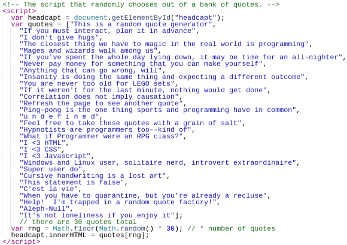

This page explains my choices for designing this very website.
I chose a green color scheme and monochromatic text as an attempt to emulate the look of older terminal computers (pre-Graphical User Interface). I am aware that such computers probably didn't separate content into two columns, but I split the content on my description pages anyway. Having two columns of content makes fitting everything on screen easier, and the user can read this content as if it were two pages of a book.
On the main page, I used CSS to display the links to the other pages as boxes to add some shape and visual appeal. These box-anchors form an organized grid depending on the width of the browser window, giving the main page a semblance of pattern as well. Above these boxes is the output of a JavaScript program I wrote to accompany the page. It chooses one out of an array of quotes to display, using a random number generator. These quotes are mostly meant to be non-sequitur and/or thought-provoking.
My favorite components of Web design have always been CSS and JavaScript because they can be used to liven up an otherwise dull screen of text and content. I enjoy using them to experiment with how a page looks and behaves, and I anticipate tinkering with these languages both for real-world projects and for fun.
